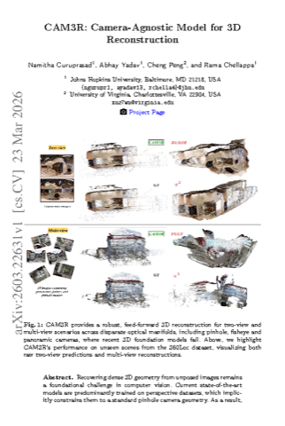
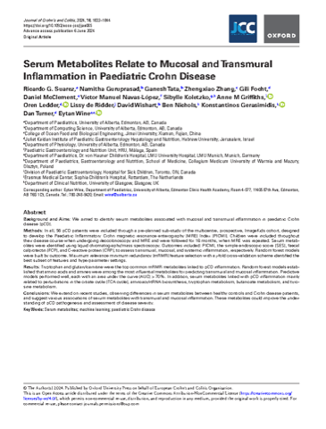
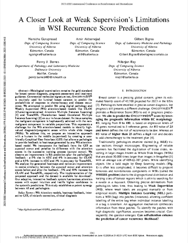
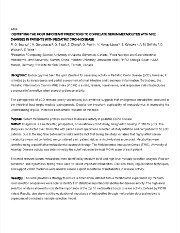
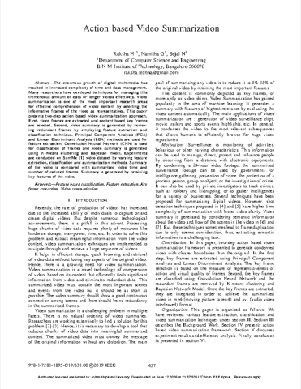
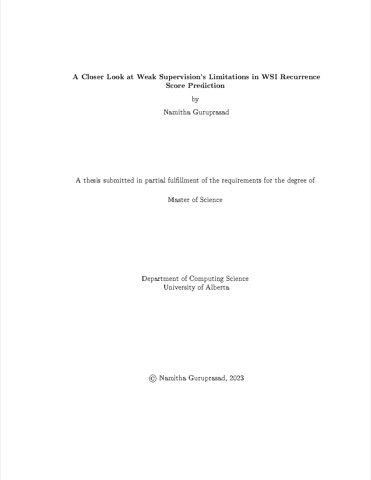

I am a Ph.D. student in Electrical & Computer Engineering at Johns Hopkins University, where I work in the AIEM Lab with Bloomberg Distinguished Professor Rama Chellappa. My research lives at the intersection of physics and deep learning for 3D/2D computer vision. I build camera agnostic, feed forward multi view reconstruction that holds up across varying altitude, diverse camera models, lens distortions, and changing appearance and seasons. In short, perception that works in the wild.
My current project, CAM3R, brings this to life, supported by the IARPA WRIVA program. Alongside it, I work on dynamic object and people tracking under the IARPA VideoLINCS program. Lately I have been bringing agentic AI into both my research and my project infrastructure to make these pipelines more tangible and natural to use. I am drawn to applications in autonomy, surveillance, and robotics, 2D perception in the wild, and healthcare.
While much of the field chases Gaussian splatting and diffusion rendering, I focus on the fundamentals: camera projection models, extreme altitude variation, and occlusion heavy tracking, because that is what makes 3D/4D perception robust enough to matter. Imagine turning everyday Insta360 and GoPro footage into a faithful 3D or 4D model.
I collaborate closely with Prof. Cheng Peng (UVA), Prof. Vishal Patel (JHU), Prof. Anand Bhattad (JHU), Dr. Abhay Yadav (JHU), and Chandrakanth Gudavalli (Mayachitra).
News
- [Jun, 2026] Paper “CAM3R: Camera-Agnostic Model for 3D Reconstruction” accepted at ECCV 2026! 🎉
- [Jun, 2026] Attended CVPR 2026 in person in Denver, USA. Happy to connect!
- [Jul, 2025] Patent “System and Method for Image Analysis and Summarization” (No. 201941033734) granted by the Indian Patent Office.
- [Nov, 2024] Paper “Serum metabolites relate to mucosal and transmural inflammation in paediatric Crohn disease” accepted in the Journal of Crohn's and Colitis.
- [Jun, 2024] Started a new chapter in the AIEM Lab under Prof. Rama Chellappa.
- [Jan, 2024] Joined Johns Hopkins University for my Ph.D. with an ECE Departmental Fellowship.
- [Dec, 2023] Attended IEEE BIBM 2023 in Istanbul, Turkey and presented “A Closer Look at Weak Supervision's Limitations in WSI Recurrence Score Prediction”.
- [Oct, 2023] Paper “A Closer Look at Weak Supervision's Limitations in WSI Recurrence Score Prediction” accepted at IEEE BIBM 2023.
- [Sep, 2023] Defended my M.Sc. thesis (advisors Dr. Nilanjan Ray and Dr. Gilbert Bigras, Cross Cancer Institute).
- [Mar, 2023] Paper “Identifying the Most Important Predictors to Correlate Serum Metabolites with MRE Changes in Pediatric Crohn Disease” accepted in the Journal of the Canadian Association of Gastroenterology.
- [Feb, 2023] Received Ph.D. admission offer from Johns Hopkins University.
- [Jan, 2021] Joined the University of Alberta for my M.Sc. in Computing Science (deferred due to COVID-19 border restrictions).
- [Oct, 2020] Received my B.E. from VTU as a Gold Medalist, advised by Dr. Sejal Nimbhorkar.
- [Feb, 2020] M.Sc. thesis based admission offer (fully funded plus stipend) from the University of Alberta.
- [Feb, 2020] FKCCI Manthan business plan finalist: “Emotion Recognition for CCTV Surveillance and Video Summarization.”
- [Oct, 2019] Attended IEEE TENCON 2019 in Kochi, India and presented “Action based Video Summarization”.
- [Aug, 2019] Patent “System and Method for Image Analysis and Summarization” (No. 201941033734) filed at the Indian Patent Office.
- [Aug, 2019] Paper “Action based Video Summarization” accepted at IEEE TENCON 2019.
- [Aug, 2019] Smart India Hackathon finalist: “Emotion Recognition for CCTV Surveillance and Video Summarization.”
- [Jun, 2019] Data Science Intern at Vision Digital India.
- [Sep, 2018] Built Lifeline ERV to aid Bangalore traffic police, funded by the BNMIT E-Cell.
- [Aug, 2016] Joined BNMIT (VTU) for my B.E. in Computer Science.
- [May, 2016] Received Pre University diploma (State Rank 6, Karnataka).
- [Aug, 2014] Joined Deeksha (SGPTA) for Pre University.
- [May, 2014] Completed ICSE high school at Carmel School, Bangalore (93%).
Selected Publications

Serum metabolites relate to mucosal and transmural inflammation in paediatric Crohn disease
Journal of Crohn's and Colitis, 18(11), 1832 to 1844, 2024

A Closer Look at Weak Supervision's Limitations in WSI Recurrence Score Prediction
IEEE International Conference on Bioinformatics and Biomedicine (BIBM), 2023

Journal of the Canadian Association of Gastroenterology, 6(S1), 2023

* Equal contribution.
Patents
System and Method for Image Analysis and Summarization
Indian Patent No. 201941033734 · Filed 2019 · Granted 2025
* Equal contribution.
Thesis / Dissertation

A Closer Look at Weak Supervision's Limitations in WSI Recurrence Score Prediction
M.Sc. Thesis, University of Alberta, 2023
Projects
Teaching
Teaching Assistant, Johns Hopkins University
- EN.520.650 Machine Intelligence (Spring 2025, Spring 2026)
Teaching Assistant, University of Alberta
- CMPUT 466/566 Introduction to Machine Learning (Fall 2022)
- CMPUT 366 Intelligent Systems (Fall 2021, Winter 2023)
- CMPUT 302 Human Computer Interaction (Winter 2022)
Education
- 2024 to now
 Ph.D., Electrical & Computer Engineering, Johns Hopkins University (M.S.E. en route)
Ph.D., Electrical & Computer Engineering, Johns Hopkins University (M.S.E. en route) - 2021 to 2023M.Sc., Computing Science, University of Alberta
- 2016 to 2020
 B.E., Computer Science, Visvesvaraya Technological University (BNMIT)
B.E., Computer Science, Visvesvaraya Technological University (BNMIT)
Experience
- 2024 to nowGraduate Research Assistant, Johns Hopkins University
- 2021 to 2023Graduate Research Assistant, University of Alberta
- 2019Data Science Intern, Vision Digital India
Honors & Awards
- 2024JHU ECE Departmental Fellowship
- 2021University of Alberta thesis based tuition waiver & stipend
- 2020VTU Gold Medalist (Class of 2020)
- 2020FKCCI Manthan, top 5% business plan proposal
- 2019IEDC, Govt. of India grant (₹2,00,000), Image Analysis & Summarization
- 2019IEDC, Govt. of India grant (₹2,00,000), LifeLine ERV ambulance app
- 2019Smart India Hackathon (Hardware) finalist, team lead, “The Neural Soldiers”
Mentoring
- Alethea Nagahara, Undergraduate, USC
Service
Reviewer
- IEEE BIBM (conference)
- International Journal of Computer Vision (IJCV)
Languages
- English, native / bilingual
- Kannada, native / bilingual
- Hindi, full professional
- French, Sanskrit, Spanish, elementary
Tools
Python · C++ · PyTorch · OpenCV · Docker · Kubernetes · AWS